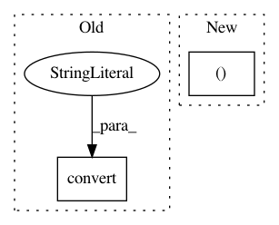

035832c8fa5b2078c66d2833a15dc6582e43e142,lib/iproc.py,,read_image_rgb_uint8,#Any#,54
Before Change
def read_image_rgb_uint8(path):
src = Image.open(path).convert("RGB")
dst = np.array(src, dtype=np.uint8)
return dst
After Change
if isinstance(src.info.get("transparency"), bytes):
src = src.convert("RGBA")
mode = src.mode
if mode in ("LA", "RGBA"):
if mode == "LA":
src = src.convert("RGBA")
rgb = Image.new("RGB", src.size, (128, 128, 128))
In pattern: SUPERPATTERN
Frequency: 4
Non-data size: 2
Instances
Project Name: tsurumeso/waifu2x-chainer
Commit Name: 035832c8fa5b2078c66d2833a15dc6582e43e142
Time: 2018-11-06
Author: tsurumeso@gmail.com
File Name: lib/iproc.py
Class Name:
Method Name: read_image_rgb_uint8
Project Name: tsurumeso/waifu2x-chainer
Commit Name: 77c16db8bf8cbc0548e37b5b5622644c8e243e8b
Time: 2018-02-24
Author: tsurumeso@gmail.com
File Name: waifu2x.py
Class Name:
Method Name: upscale_image
Project Name: tsurumeso/waifu2x-chainer
Commit Name: 77c16db8bf8cbc0548e37b5b5622644c8e243e8b
Time: 2018-02-24
Author: tsurumeso@gmail.com
File Name: waifu2x.py
Class Name:
Method Name: denoise_image
Project Name: wkentaro/labelme
Commit Name: a8b94863d2178d84b7e6c66eae38d0964eeca165
Time: 2020-07-13
Author: www.kentaro.wada@gmail.com
File Name: examples/instance_segmentation/labelme2coco.py
Class Name:
Method Name: main